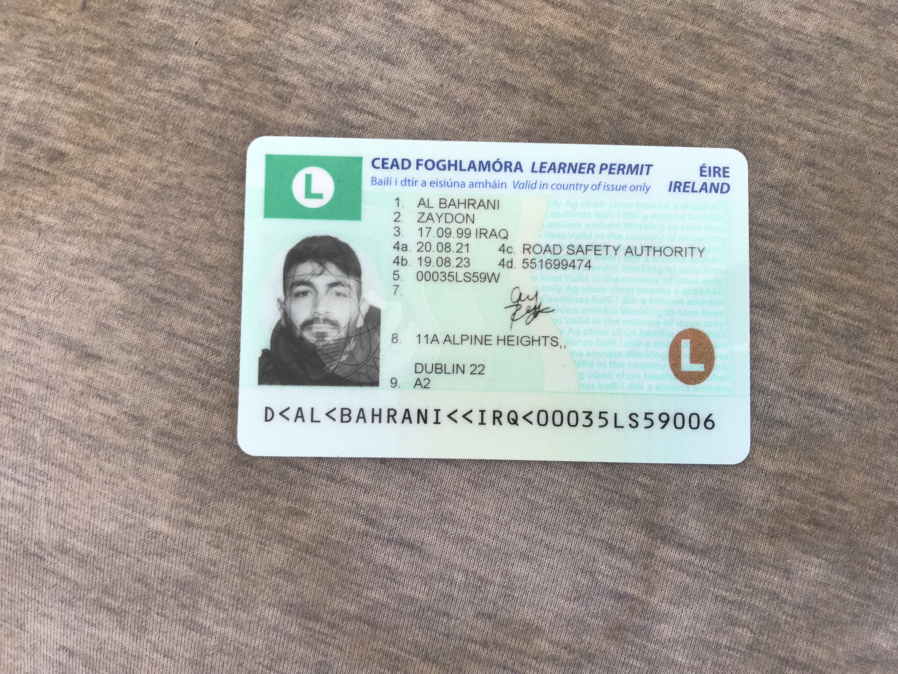

Zaydon Albahrani CV

Summary
I am a college student who is persuing computer science in TUDublin and found passion in web developmet, so I want
to develop my skills and improve them to build websites and application for the users for day to day uses.
I also love sports including going to the gym and football. I love trying new adventures, and try to get to learn
new things whenever it is possible to do so. I'm also workaholic, i love working and try to be active.
Eduction
- Computer science - TUDublin
- Cloud Computing - DBS (Dublin Business School)
- The King's Hospital - Leaving Cert
- Foundation in Medical Chemistry
- The Complete 2024 Web development Bootcamp - Udemy
Work Experience
- Assisstance Manager - Alfa & Co(2017-2018)
- Hotel Assisstant Manager - Anadalus Hotel (2018-2019)
- Floor Staff - Noah & Co (2019-2020)
- Manager - Beauty and the beef (2021-2024)
Skills
- Management Skills ⭐️⭐️⭐️⭐️⭐️
- Web development skills ⭐️⭐️⭐️⭐️
- Time management skills ⭐️⭐️⭐️
- Stress Management ⭐️⭐️⭐️⭐️⭐️